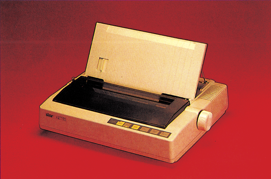
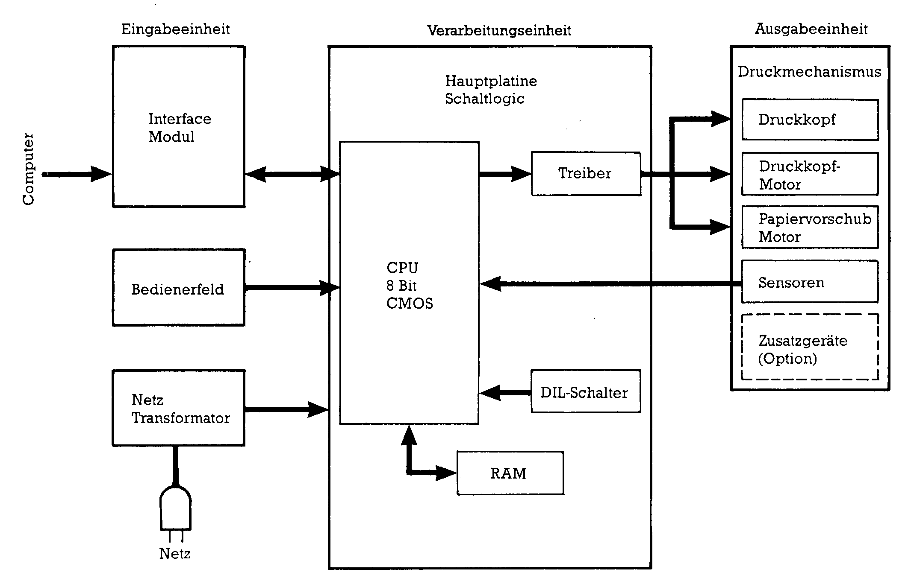

Kennen Sie Ihren Drucker? (Teil 2)
Diesmal wollen wir besonders auf typische Probleme und Fehler, die man bei der Bedienung von Druckern machen kann, eingehen. Als Beispiel sollen uns die Star-Drucker dienen.
h n dieser und in den weiteren Teilen unseres Druckerkurses werden wir Ihnen nicht nur viel Interessantes über Druckersteuerung zeigen, sondern auch jedesmal einen Druckerhersteller vorstellen. Den Anfang macht Star, ein relativ junges Unternehmen, dessen Drucker sich in den letzten Jahren einen beachtlichen Marktanteil erkämpfen konnten.
Die Senkrechtstarter
Wie viele Hersteller, die auf dem deutschen und europäischen "Computermarktihre Produkte anbieten, ist auch Star Teil eines japanischen Unternehmens, dessen Produktpalette sich in die verschiedensten Richtungen erstreckt. Während es das japanische Unternehmen bereits seit 1947 gibt, existiert Star Europe mit Sitz in Eschborn bei Frankfurt erst seit März 1983. Die wesentlichen Aufgaben von Star Europe sind Marketing und Vertrieb von Star-Druckern in Europa, Afrika und im Nahen Osten sowie der Kundendienst. Um diesen Aufgaben gerecht zu werden, unterhält Star in Eschborn eine eigene Entwicklungsabteilung, deren Aufgabe darin besteht, Geräte, die für den amerikanischen Markt konstruiert wurden, auf europäische und vor allem deutsche Anforderungen umzubauen.
Zur Produktpalette von Star gehören sowohl Typenrad-, Thermo- als auch Matrixdrucker, von denen wir Ihnen die wichtigsten kurz vorstellen möchten.
- Typenraddrucker
Der »Power Type«ist ein Typenraddrucker, hauptsächlich für den geschäftlichen Einsatz, mit Typenrädern zu 96 Zeichen, Centronics- und serieller Schnittstelle und einer Druckgeschwindigkeit von 18 Zeichen pro Sekunde.
- Thermodrucker
Im Bereich der Thermodrucker bietet Star den STX 80 an. Wie bei allen Thermodruckern ist der Hauptvorteil des STX 80 im geringen Geräuschpegel zu sehen. Die Fähigkeiten des STX 80 orientieren sich hauptsächlich an denen eines Matrixdruckers, wobei im praktischen Betrieb die Einschränkung auf spezielles Thermopapier etwas nachteilig auffällt.
- Matrixdrucker
Der Schwerpunkt liegt bei Star eindeutig auf der Produktion von Matrixdruckern. Angefangen bei den Delta- und Gemini-Serien, über die Radix- und SG-,SD- und SR-Serien, bis hin zu den neuen NL- und NB-Serien haben sich die Star-Matrixdrucker fortentwickelt. In mehreren Testberichten (Ausgabe 5/85) konnten wir den Star-Druckern durchweg gute Noten erteilen. Der SG-10 wurde unser erster Referenzdrucker der Preisklasse II (bis 1400 Mark). Mittlerweile hat der NL-10 (Bild 1), der viele sinnvolle Neuerungen und ein verbessertes Preis/Leistungsverhältnis aufweist, den SG-10 als Referenzdrucker abgelöst. (Test in der Ausgabe 4/86). Mit dem NL-10 werden wir uns gleich etwas näher beschäftigen. Doch zuvor wollen wir klären, wie so ein Drucker überhaupt funktioniert.

Druckertechnik
Im letzten Teil unseres Kurses war viel die Rede von ROM und RAM, Zeichen- und Befehlssätzen. Doch was steckt eigentlich dahinter, welche Technik repräsentiert ein Drucker? Sehen wir uns dazu zunächst das Blockschaltbild (Bild 2) eines Matrixdruckers (hier am Beispiel des NL-10) an. Im wesentlichen kann man dabei zwischen drei Funktionseinheiten unterscheiden: Erstens die Eingabeeinheiten wie das Tasten-Bedienfeld oder die Daten aus dem Schnittstellen-Modul. Zweitens die Verarbeitungseinheit, deren Herz ein CMOS-Mikroprozessor mit 8-Bit-Datenbus, 256 KByte RAM, 24 parallelen Ein/Ausgabeleitungen, zwei seriellen Steuerleitungen sowie zwei eingebauten Uhren ist. Drittens die Ausgabeeinheit, die aus Druckkopf, Papier- und Druckkopftransport sowie einer Reihe von Sensoren, wie beispielsweise dem Papierende-Sensor besteht. Sie sehen, ein Drucker ist eigentlich ein eigener leistungsfähiger Computer, der sich hauptsächlich dadurch von einem gewöhnlichen Computer unterscheidet, daß er seine Instruktionen nicht über die Tastatur, sondern über sein Schnittstellen-Modul erhält. Zweiter wichtiger Unterschied ist die Ausgabeeinheit, die beim Computer meistens der Bildschirm ist, beim Drucker hingegen werden die Daten an das Druckwerk und damit auch auf dem Papier ausgegeben.

Wenn Sie nun beispielsweise einen Text an Ihren Drucker senden, so wird dieses System aktiviert. Beim Senden von Daten müssen sich sowohl Drucker als auch Computer an ein bestimmtes Übertragungsprotokoll halten, damit die Verständigung auch wirklich klappt. Bei der Centronics-Norm, wie sie von den meisten Druckern verwendet wird, werden die Daten parallel, das heißt byteweise übertragen. Das dabei verwendete Verfahren sieht folgendermaßen aus:
Sind Computer und Drucker miteinander verbunden, so wird die Leitung »Strobe« (Pin 1 des Centronics-Steckers) normalerweise auf High-Pegel gehalten. Stehen nun Daten zur Übertragung bereit, wird dieses Signal für mindestens 0,5 Mikrosekunden auf Low-Pegel gesetzt. Erkennt der Drucker diesen Impuls, liest er die über Leitung 2 bis 9 kommenden Daten ein. Jede Signalleitung trägt ein Informationsbit. Eine logische »I« wird durch ein Signal mit High-Pegel, eine logische »0« durch Low-Pegel dargestellt. Der Computer muß diese Signalpegel mindestens 0,5 Mikrosekunden halten. Hat der Drucker die Daten richtig empfangen, setzt er die Leitung 10 »ACK« (acknowledge=bestätigen) für zirka 10 Mikrosekunden auf Low-Pegel. Da die Datenübertragungsgeschwindigkeit vom Computer ein Vielfaches von der Geschwindigkeit ist, mitdergedruckt werden kann, werden die ankommenden Daten zuerst zwischengespeichert. Somit ist der Drucker in der Lage, mehr Daten zu empfangen, als er auf einmal drucken kann, nämlich so viele, bis der Speicher voll ist (in der Regel 2 KByte).
Dieser Speicher ist ein sogenannter »First in — First out«-Speicher, das heißt, die zuerst gespeicherten Daten werden auch zuerst wieder weitergeleitet. Solange der Puffer noch aufnahmebereit ist, signalisiert der Drucker dem Computer dies durch das »Busy-Signal« auf Leitung 11. Solange der Drucker empfangsbereit ist, hat dieses Signal Low-Pegel. Es wechselt auf High-Pegel, wenn der Drucker keine weiteren Daten speichern kann und zuerst seinen Puffer abarbeiten muß.
Empfänger der Daten im Drucker ist die CPU, die dem Pufferspeicher die Daten in Blöcken zu einer Zeile abnimmt und ihrerseits wieder speichert (interner Speicher der CPU zirka eine Zeile). Die CPU untersucht die Daten zunächst auf Steuerzeichen, die zum Beispiel das Ende einer Zeile anzeigen oder den Drucker in einen anderen Druckmodus schalten. Das Steuerzeichen, das das Ende einer Zeile anzeigt, leitet den Druckvorgang ein. Sollte ein solcher Steuerbefehl nicht decodiert werden, die Datenmenge den Einzeilen-Zwischenspeicher aber füllen, leitet der Drucker den Druckvorgang selbständig ein. Die Decodierinformation für die CPU ist in den ROMs (Read Only Memory) des Druckers gespeichert, die das Betriebssystem des Druckers beinhalten. Währenddessen werden auch die Schalter des Bedienfeldes abgefragt, ob zum Beispiel die Online/Offline-Taste gedrückt wurde. Beim Einschalten des Druckers werden übrigens auch die DIL-Schalter zur Format- und Zeichensatzsteuerung abgefragt. Diese nach dem Einschalten gespeicherte Information wird nun mit den decodierten Daten vom Computer verglichen und, falls ein Steuerbefehl vorliegt, eine entsprechende Umschaltung vorgenommen. Sind alle diese Vorarbeiten erledigt, wird das erste Zeichen mit dem Zeichengenerator verglichen, in dem festgelegt ist, welche Nadeln für welches Zeichen verwendet werden müssen. Mit diesen umgesetzten Daten wird der Druckkopf dann angewiesen, die entsprechenden Nadeln zu aktivieren. Ist nun die erste Spalte eines Zeichens gedruckt, erhält der Vorschubmbotor (für die Positionierung des Druckkopfes verantwortlich) den Befehl, den Kopf um eine Spalte weiter zu rücken. Ist dann das Zeichen fertiggedruckt, wird um mehrere Stellen vorgerückt, da zwischen den Buchstaben ja auch ein Abstand sein muß. Gleichzeitig hält die CPU mittels eines Zählers fest, wo sich der Druckkopf befindet. Dieser Vorgang wird so lange fortgeführt, bis die ganze Zeile abgedruckt ist. Jetzt wird der Papiervorschub eingeleitet. Der Papiervorschubmotor erhält die dementsprechende Information. Das beinhaltet die Beschleunigung des Motors sowie das Abbremsen, sobald eine neue Zeile erreicht ist. Gleichzeitig läuft auch hier wieder ein Zähler mit. Sind diese Vorgänge abgeschlossen, holt sich die CPU neue Daten aus dem Pufferspeicher.
Sie sehen, so ein Drucker ist ein richtiger Schwerarbeiter, der sich das Ausdrucken eines Textes nicht gerade leicht macht. Daß auf diesem ganzen Weg vom Computer zum fertigen Zeichen auf dem Papier auch einiges schiefgehen kann, wissen viele Druckerbesitzer aus Erfahrung. Aber das muß nicht so sein, denn wenn man erst mal das Funktionsprinzip eines Druckers verstanden hat, so ist auch eine Fehlerbehebung kein unlösbares Problem mehr.
Gemäß dem Ziel unseres Kurses, nicht nur theoretische, sondern auch praktische Tips zu vermitteln, wollen wir uns den Problemen beim Umgang mit Druckern widmen. Das erste Problem gibt es, seit es den C 128 gibt. So erfreulich die Neuerung eines deutschen Zeichensatzes beim C 128 auch ist, sie ist nicht ganz problemlos. Wie man aus der Tabelle sehen kann, haben die Umlaute des © 128 vollkommen andere Werte als bei den meisten Druckern. Wenn Sie also ein solches Zeichen an den Drucker senden, erhalten Sie meistens nicht das gewünschte Resultat.
| Vergleichstabelle C 128 — ASCII | ||
|---|---|---|
| Zeichen | C 128 | ASCII |
| § | 64 | 64 |
| ä | 187 | 123 |
| ö | 188 | 124 |
| ü | 189 | 125 |
| ß | 190 | 126 |
| Ä | 219 | 91 |
| Ö | 220 | 92 |
| Ü | 221 | 93 |
Wir haben uns darüber Gedanken gemacht und ein kleines Programm geschrieben, das eine Umlautwandlung vornimmt (Listing). Dieses kleine Programm ermöglicht es Ihnen, falls Sie einen C 128 besitzen, sich selber in Basic eine kleine Textverarbeitung zu schreiben. Das Programm wandelt die auf den Drucker (Geräte-Nr.4) auszugebenden Zeichen des DIN-Zeichensatzes in einen ASCI-Zeichensatz um, inclusive der Umlautewandlungen; das heißt, alles was auf dem Bildschirm klein geschrieben wird, wird auch auf dem Drucker klein ausgedruckt. Das eigentliche Programm steht ab $0B00 im Kassettenpuffer und wird zunächst mit SYS 11*256 (dezimal 2816) initialisiert. Von nun an wird bei jeder Ausgabe (CHKOUT-Vektor wurde umgelegt) auf das Gerät mit der Gerätenummer 4 das auszugebende Zeichen in die ASCII-Form umgewandelt und dann erst weitergeleitet. Allerdings wird dadurch der Gebrauch der ESC-Codes etwas behindert, denn dabei würden die nachfolgenden Codes auch mitgewandelt werden. Dazu, sprich vor jeder ESC-Anweisung an den Drucker, muß die Code-Wandlung durch SYS 11%256 +11 (dezimal 2827) abgeschaltet und nach der Anweisung wieder angeschaltet werden. Das Programm arbeitet mit allen Druckern, die sich an die Standard-ASCI Tabelle halten, problemlos zusammen.
Ellipsen statt Kreise
Bildschirmdarstellung ist nicht gleich Druckbild. Diese Erfahrung haben bereits viele MPS 803-, aber auch NL-10-Besitzer gemacht. Wenn inan zum Beispiel mit Hi-Eddi einen Kreis gezeichnet hat, wird beim Ausdruck aus dem Kreis eine Ellipse. Der Grund für dieses Phänomen ist leicht erklärt. Betrachten wir dazu die Grundlagen der Gralikdarstellung. Der Kreis wird auf dem Bildschirm mit einer Auflösung von 320 x 200 Punkten dargestellt. Will man dieses Bild nun auf dem Drucker ausgeben, so muß man darauf achten, daß eine Grafik-Punktdichte gewählt wird, die entweder genau der Bildschirmdarstellung entspricht, oder ein Vielfaches davon darstellt. Mit anderen Worten, die Punktauflösung in der horizontalen sollte 320 Punkte, 640 Punkte oder 960 Punkte und die vertikale Punktauflösung sollte 200, 400 oder 600 Punkte betragen. Zunächst zur horizontalen Auflösung. Die ESC/P-Norm, nach der auch der NL-10 in eingeschränkter Form arbeitet, sieht insgesamt sieben Punktdichten (480, 576, 640, 720, 960, 1152 und 1920 Punkte pro Zeile). Für eine maßstabgerechte Abbildung eignen sich beim C 64 die Punktdichten 640 Punkte pro Zeile (bei 400 Punkten in der vertikalen) oder 960 Punkte pro Zeile (bei 600 Punkten in der vertikalen). Die jeweiligen Befehle für diese Punktdichten lauten:
1) ESC "*";CHR$(4),;CHR$(n1);CHR$(n2) (für 640 Punkte/Zeile) 2) ESC "Y";CHR$(n1);CHR$(n2) (für 960 Punkte/Zeile)
Die vertikale Auflösung von 400 beziehungsweise 600 Punkten berechnet man folgendermaßen: Da bei den hier verwendeten Grafikbefehlen immer mit acht Nadeln gedruckt wird, werden pro Zeile immer acht Punkte in der Vertikalen gemeinsam gedruckt. Daraus ergibt sich, daß bei der 640 Punkte/Zeile-Auflösung insgesamt 50 Zeilen (50 x 8=400) gedruckt werden müssen. Bei der 960 Punkte/Zeile-Auflösung sind es 75 Zeilen. Wie man nun die Grafik trotzdem so umprogrammiert, daß sie beispielsweise mit Hi-Eddi einwandfrei zusammenarbeitet, haben wir in einem eigenen Artikel in dieser Ausgabe beschrieben.
Textprogramme und NL-10
Das Commodore-Modul des Star NL-10 besitzt zwei Betriebsarten. Zum einen ist das die Commodore-Betriebsart, in der der NL-IO einen MPS 803 emuliert (aber um wesentliche Funktionen bereichert). Zum anderen verfügt der NL-10 aber auch über einen ASCII-Modus. Beide Modi werden durch den DIL-Schalter Nummer 5 auf der Rückseite des NL 10 eingeschaltet (On = Commodore; Off= ASCI). Möchte man nun mit einem Textprogramm, beispielsweise Vizawrite 64 oder Startexter 64 arbeiten, so kommt es zu Problemen, wenn der Commodore-Moduseingeschaltet ist. Bei Vizawrite 64 wirkt sich das so aus, daß beispielsweise die Funktion zum Unterstreichen reverse Schrift hervorruft, beim Startexter werden die Umlaute nicht in NLQ dargestellt, oder die Groß- und Kleinbuchstaben werden vertauscht. Dieses Problem läßt sich ganz einfach dadurch lösen, daß man den DIL-Schalter 5 auf »Off« schaltet, das heißt, den ASCII-Modus einschaltet. Gleichzeitig sollte man darauf achten, daß der deutsche Zeichensatz eingeschaltet ist (DIL-Schalter 6=On; Schalter 7= Off; Schalter 8=On). Danach verhält sich der NL-1O wie ein Epson-Drucker und wird auch im Druckermenü von Vizawrite 64 genauso angesprochen (Printer Type »e«). Wenn Sie nun die NLQ-Schrift einschalten möchten, definieren Sie sich in der Formatzeile einfach folgende Steuercodes: <CTRL> 0=27 <CTRL> 1=120 <CTRL> 2=49 <CTRL> 3=48. Mit dem Befehl »<CTRL> 0 <CTRL> 1 <CTRL> 2«schalten Sie nun die NLQ-Schrift ein und mit <CTRL> 0 <CTRL> 1 <CTRL> 3 wieder aus. Beim Startexter ist das Ganze schon etwas komplizierter. Dazu müssen Sie zunächst das Programm »Installation« aufrufen. Als Druckertyp ist für den NL-10O die <3> (Epson mit Interface) einzugeben. Für die Sekundäradresse geben Sie bitte <7> ein. Nun können Sie über die Definition einer der Funktionen 0 bis 9 die NLQ-Schrift ein- und ausschalten. Speichern Sie die eingetragenen Daten bitte auf der Systemdiskette.
Wenn Sie Besitzer einer StarTexter-Version mit Versionsnummer größer 4.0sind, so achten Sie bitte darauf, daß in der Parameter-Seite 2(<CTRL> und <F5>) unter dem Punkt »Wandlung/ALF« der Wert »g« eingetragen ist. In allen Fällen ist darauf zu achten, daß der DIL-Schalter 5 des NL-10 auf »Off« steht.
Aussichten
Alle Besitzer von Epson-Druckern dürfen sich auf die nächste Ausgabe freuen. Wir stellen Ihnen Epson Deutschland und die Epson-Drucker vor. Natürlich gibt es auch wieder einige interessante Details der Druckertechnik sowie viele Problemlösungen für diese Drucker.
(aw)